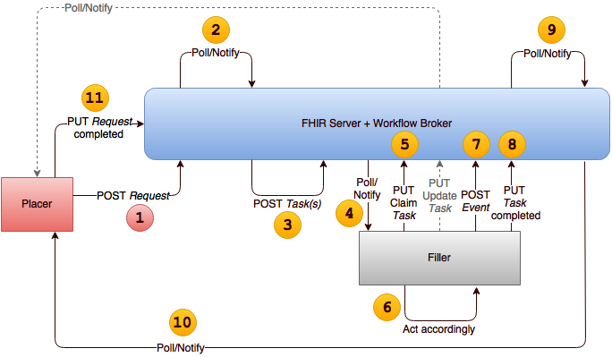

TODO: Discussion (or reference to one) on Polling and Subscription
12.8.1 Option F: Creation of Task on placer's system
12.8.1.1 Steps
Placer creates the request in its own system via POST, an internal action, or POSTs it to a queue server system
Placer creates a Task resource in its own system via POST, an internal action, or POSTs it to a queue server system, pointing to the request resource and seeking fulfillment. The Task may have a specified performer, in which case step
3 is expected to be done by that performer. If the Task does not have a specified "performer" (although may have performer type), then this is a case of an "open" task, where any number of fulfillers may attempt to "claim" the task.
Who succeeds is determined by local policies and procedures.
Fulfiller system uses either polling or pub/sub to become aware of the existence of the task
A common case may be the conveyance of the Task id to a fulfiller by other means. For example, a lab test is ordered, and the patient takes a requisition to the lab of his choice. The requisition contains the Task id (as a bar code,
or stored in the patient's healthcare smart card), and the lab system can execute a direct GET for the Task, thus eliminating the need for subscription or polling.
Fulfiller system queries to retrieve the referenced request and updates the Task to indicate "acceptance" and agreement to fulfill
Fulfiller may update the Task to indicate interim progress notes
Placer is made aware of the acceptance of the Task and any changes to the Task either through its ownership of the resource or using polling or a subscription to a queue server system to determine the same
Fulfiller creates an event resource in its own system via POST or internal action, or POSTs it to a queue server system
Fulfiller PUTs an update to the Task resource to change its status to completed and to point to the event resource
Placer is aware of the completion of the Task either through the ownership of the resource, or via polling or subscription to a queue server system, and retrieves the referenced event resource
Placer updates the request resource to indicate completion via PUT or an internal action, or PUTs the update to a queue server system
12.8.1.2 Benefits
Uses the FHIR REST API for managing the workflow
Both placer and fulfiller can track the state of the workflow
Can use this approach for request other than just fulfillment (e.g. to request status change or other updates)
There's an ability to negotiate fulfillment - i.e. the ability to say "no"
Explicit acknowledgement that filler has received and agreed to act on the request
Supports cancellation through ability of placer to change the status of the Task to cancelled.
12.8.1.3 Limitations
Additional complexity of using Task
Additional complexity of setting up and maintaining a subscription or polling infrastructure
Placer and fulfiller must have a FHIR server, and placer's FHIR server must allow "write" updates to the Task resource
Placer and filler may need to be able to communicate directly (i.e. know each other's respective endpoints)
This could become unmanageable if there are a large (or dynamic) number of placers and fillers that need to communicate
Placer and fulfiller must know where to subscribe for content - this could be a large number of systems
Might not apply if there's a queue server
Does not give fulfiller control over whether the task can be cancelled
12.8.1.4 Usage Recommendations
When following the state of the workflow is important
When there is a need to know that a fulfiller has accepted to perform the request
When there is a need to be able to change the performance of the request
When there are multiple steps in fulfilling the request
When requests are not (always) directed to a specific filler
When the placer needs to manage the Task resource
12.8.1.5 Usage examples
Lab order to known performer
A provider orders a bilirubin test for a patient, to be done at the provider's facility lab....
"Open" lab order
A patient is scheduled for their physical, and the provider sends her a secure message to have a fasting blood test performed before the office visit. The message has a link to a requisition, and a list of possible lab locations where the test can be
done. The patient chooses a lab location near her place of employment and a test is scheduled. The lab gets the requisition from the patient and, using the information on how to retrieve the Task from the provider's system, claims the test
to be performed...
12.8.2 Option G: POST of Task to fulfiller's system
12.8.2.1 Steps
Placer creates the request in its own system via POST or an internal action, or POSTs it to a queue server system
Placer POSTs a Task resource to the filler system, pointing to the request resource and seeking fulfillment
Fulfiller system GETs the referenced request
Fulfiller updates the Task to indicate acceptance of the task
Placer either polls the Task to note acceptance or uses a subscription to determine the same
Fulfiller may further update the Task to reflect the progress made. Using the same method as in step 5, the placer becomes aware of these updates
Fulfiller creates an event resource in its own system via POST or an internal action, or POSTs it to a queue server system
Fulfiller Updates the Task resource to change its status to completed and to point to the event resource
Placer either polls the Task to note completion and changes or uses a subscription to determine the same
Placer system queries to retrieve the referenced event resource
Placer updates the request resource to indicate completion via PUT or an internal action, or PUTs the update to a queue server system
12.8.2.2 Benefits
Uses the FHIR REST API for managing the workflow
Subscription/polling is targeted to a specific resource instance - much simpler than general subscription/polling infrastructure
Both placer and fulfiller can track the state of the workflow
Can use this approach for request other than just when requesting fulfillment (e.g. to request status change or other updates)
There's an ability to negotiate fulfillment - i.e. the ability to say "no"
Explicit acknowledgement that filler has received and agreed to act on the request
Placer can attempt to cancel task in the event of order cancellation, but no guarantee
Filler has control over whether task can be cancelled
12.8.2.3 Limitations
Additional complexity of using Task
Additional complexity of using subscription or polling
Placer and fulfiller must have a FHIR server and fulfiller's FHIR server must allow "write" creation of the Task resource by the placer
Placer and filler may need to be able to communicate directly (i.e. know each other's respective endpoints)
This could become unmanageable if there are a large (or dynamic) number of placers and fillers that need to communicate
Might not apply if there's a queue server
Placer might not know immediately when filler system has retrieved the request
12.8.2.4 Usage Recommendations
When following the state of the workflow is important
When there is a need to know that a fulfiller has accepted to perform the request
When there is a need to be able to change the status of the workflow by either the placer or the fulfiller
When there are multiple steps in fulfilling the request
When the fulfiller needs to manage the Task resource
12.8.2.5 Usage Examples
Outpatient prescription
A patient is suffering from a poison ivy rash and is prescribed a steroid medication to manage the reaction. The provider asks the patient for his preferred pharmacy and creates the Task at the specified pharmacy's system. The patient is running late
and by the time he arrives at the pharmacy, it is closed. He calls the clinic where the provider practices and requests that the pharmacy where the order is to be fulfilled is changed to one that is open around the clock. The staff at the
clinic cancels the Task at the original pharmacy and creates a new Task at the requested new one. By the time the patient arrives at the new pharmacy, the medication is ready for pickup. Once the request is fulfilled, the clinic receives
the notification that the Task is complete, and the prescription is also marked as complete.
12.8.3 Option H: POST of Task to a workflow broker
TODO: Still needs review and update

12.8.3.1 Steps
Placer POSTs the request to its own system or to a queue server system
Broker detects that new un-assigned request (without a Task yet created and falling within the scope of the Broker to ensure fulfillment) via polling or subscription
Broker POSTs a Task resource to its own system or a queue server system, pointing to the request resource and seeking fulfillment from a specific filler Task does not have a specified "performer" (but may have performer type)
If the Task is rejected by one potential recipient, the broker may create a new task to seek fulfillment from others
Offloads responsibility for seeking fulfillment from the placer system, but more actively solicits fulfillment than a simple "post the task and see who takes it". Also, allows prioritized assignment of tasks (i.e. some fillers may be preferred
over others)
12.8.3.3 Limitations
Requires a broker to exist
Broker must know all available fillers and their capabilities to allow appropriate assignment
Broker must understand business rules for permitting changes to tasks such as cancelation
12.8.3.4 Usage Recommendations
Appropriate in environments that have a workflow engine that takes on responsibility for ensuring fulfillment
12.8.3.5 Usage Examples
12.8.4 Option I: POST of Task to fulfiller's system, followed by POST of sub-Task on placer's system
12.8.4.1 Steps
Placer creates the request in its own system via POST or an internal action
Placer POSTs a Task resource to the filler system, pointing to the request resource and seeking fulfillment
Fulfiller system GETs the referenced request
Fulfiller updates the Task to indicate acceptance of the task
Fulfiller POSTs a Task, which also points to the request resource and uses the Task.partOf attribute to point to the Task from step 2 (indicating it is a sub-Task)
Fulfiller may further update both Tasks to reflect the progress made. Since the sub-Task is on the placer's system, the placer is aware of these updates
Fulfiller creates an event resource in its own system via POST or an internal action
Fulfiller Updates the Task resource to change its status to completed and to point to the event resource
Fulfiller updates the sub-Task resource as completed and points to the event resource. Since the sub-Task is on the placer's system, the placer is aware of the completion and changes.
Placer system queries to retrieve the referenced event resource
Placer updates the request resource to indicate completion via PUT or an internal action
12.8.4.2 Benefits
Uses the FHIR REST API for managing the workflow
No need to use subscription or polling
Both placer and fulfiller can track and change the state of the workflow
Can use this approach for request other than just when requesting fulfillment (e.g. to request status change or other updates)
There's an ability to negotiate fulfillment - i.e. the ability to say "no"
Explicit acknowledgement that filler has received and agreed to act on the request
Placer can initiate task cancellation, but filler decides whether it's possible to cancel the task or not
12.8.4.3 Limitations
Additional complexity of using Task
Need to keep the two Task states in sync
Placer and fulfiller must each have a FHIR server and give the other side "write" access to create and update Task resources.
Placer and filler may need to be able to communicate directly (i.e. know each other's respective endpoints)
This could become unmanageable if there are a large (or dynamic) number of placers and fillers that need to communicate
Might not apply if there's a queue server
12.8.4.4 Usage Recommendations
When following the state of the workflow is important
When there is a need to know that a fulfiller has accepted to perform the request
When there is a need to be able to change the status of the workflow by either the placer or the fulfiller
When there are multiple steps in fulfilling the request
When there is no need for polling or subscription infrastructure
When us of the FHIR REST API is preferred to any other method of communications
When the intended fulfiller is known in advance
When messaging-like functionality is needed, but a messaging infrastructure is not available
12.8.4.5 Usage Examples
Outpatient referral
A patient is seen by her Primary Care Provider (PCP) for shortness of breath and the provider decides to refer her to a cardiologist. Because of the referral, the provider's system creates ServiceRequest resource and POSTs a Task resource to a cardiologist's practice
system, requesting a referral. This places the referral request on a referral coordinator's work list to review. Upon accepting the referral, the Task is updated as accepted and a new sub-Task, referencing both the ServiceRequest and the
Task created by the provider's system, is created on the provider's system. The patient gets an appointment with the cardiologist and the sub-Task is updated with that information, allowing the provider's system to inform the provider of
the change.
The patient misplaces the information about the appointment and misses the visit with the cardiologist. The cardiologist's system updates the sub-Task to indicate the no-show and the PCP is alerted of the missed appointment. The provider's staff gets
hold of the patient and schedules another appointment for her with the cardiologist. Because of the cardiologist's system scheduling the appointment, the sub-Task is updated with that information. The patient is seen and the sub-Task
is updated accordingly. The cardiologist document the findings about the patient and updates the sub-Task as complete, adding references to the resources representing the findings. The PCP is alerted of the updates and marks the referral
as complete, which updates the original Task and the ServiceRequest as complete as well.
12.8.5 Option J: Messaging Task from placer to fulfiller
TODO: needs more details
12.8.5.1 Steps
Placer sends message to filler with a MessageHeader, where the "data" element points to the Task resource, also contained in the message. The message might or might not contain any other relevant resources (e.g. the actual request resource), or
an "event" code saying "please fulfill"
Filler system sends a response containing the same Task resource, indicating receipt of the message and, optionally, an indication of their intention to fulfill the request
Filler system may send incremental messages to the placer showing progress (e.g. specimen collected, preliminary results, final results) by including an updated Task resource
Placer system may also send messages to the fulfiller containing the Task resource and updating the state of the workflow, for example cancelling the task
12.8.5.2 Benefits
Reduced number of communications
All relevant data can be sent in one package
Responses can be asynchronous, and content may be routed
There's an ability to negotiate fulfillment - i.e. the ability to say "no"
Can request things other than just fulfillment (e.g. please suspend)
Explicit acknowledgement that filler has received and agreed to act on the request (though no need for the placer to check)
12.8.5.3 Limitations
Messaging is "heavy"
Need to negotiate what allowed responses are and what data can be present in request and response messages
Additional complexity of using Task
Need message delivery infrastructure in place
12.8.5.4 Usage Recommendations
Appropriate when existing messaging infrastructure can be used (e.g. HL7 over HTTP, v2 LTP, MLTP, WSI Web Services, Direct, VISA, REST, etc.), and a need to stay consistent with that architecture.
12.8.5.5 Usage examples
12.8.6 Option K: Service request referencing Task from placer to fulfiller
TODO: This scenario needs work - there's not a lot of experience using FHIR services to manage the fulfillment process
12.8.6.1 Steps
Placer creates a request resource on their own system or a queue server
Placer may create a Task resource on their own system or a queue server
Placer invokes a service on the filler system saying "please fulfill this request", including the content or a reference to the request resource and any other relevant data
Filler system responds (synchronously if using HTTP, but may be asynchronous if using SOAP or other transport mechanisms) with conformation of receipt and, optionally indication of intention to fulfill and/or results
12.8.6.2 Benefits
No need to expose RESTful endpoints for either requests or tasks - acts like a remote procedure call
12.8.6.3 Limitations
Requires support for a custom operation by both parties (typically at least a different operation for each type of request)
No way to get insight into progress without invoking another custom operation
12.8.6.4 Usage Recommendations
TBD
12.8.6.5 Usage examples
12.8.7 Additional Scenarios
TODO: needs review and update. Possibly add options about using messaging and/or services instead of polling/subscription in above scenarios
12.8.7.1 POST of "request" resource for filler system, response via Task
This is a variation ofOption H, where the Workflow broker is essentially merged with the fulfiller. It still allows the placer to only use a POST of the request and be made aware of the changes to
the other resources via subscription or polling.
Placer system invokes a "create" action by POSTing a 'request' resource (e.g. ServiceRequest etc.) to the appropriate RESTful resource endpoint (e.g. [base]/MedicationRequest) on the filler, placer or
queue server system and sets a "tag" on the resource that indicates the request is "actionable"
Filler POSTs a Task resource to its own system or a queue server system, pointing to the request resource and indicating intent to fulfill or refusal to fulfill
Placer system uses either polling or pub/sub to become aware of the existence of the task and fulfillment intent
Fulfiller may update the Task to indicate interim progress notes
Placer either polls the Task to note acceptance and changes or uses a subscription to determine the same
Fulfiller POSTs an event resource to its own system or to a queue server system
Fulfiller Updates the Task resource to change its status to completed and to point to the event resource
Placer system becomes aware of the update via polling or subscription
 当前位置： 工作流
当前位置： 工作流